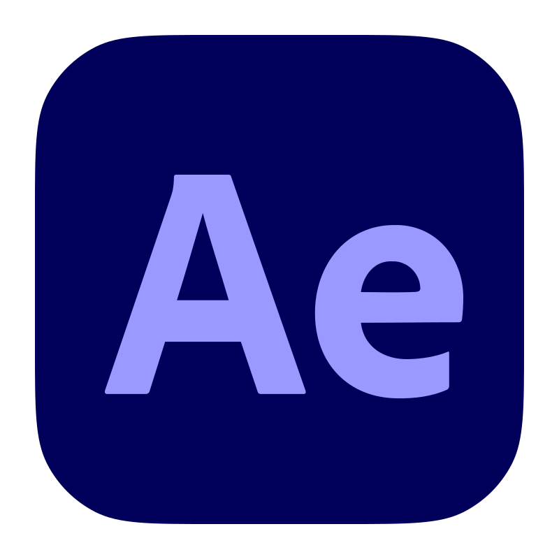
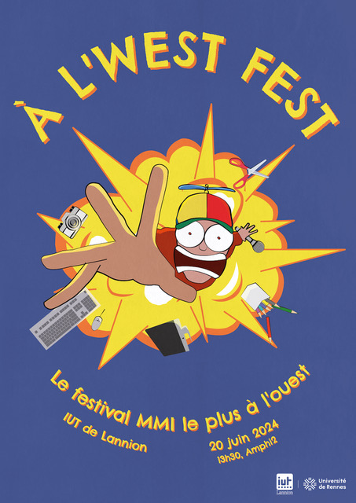
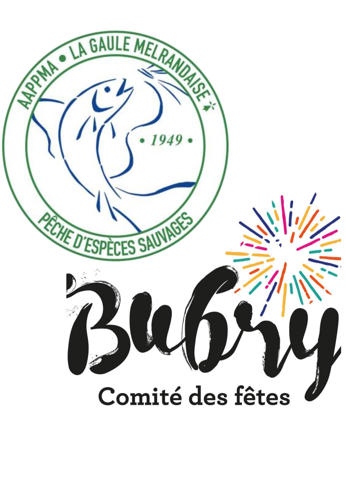
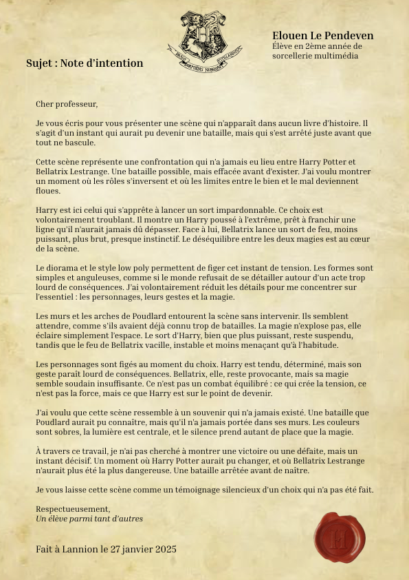
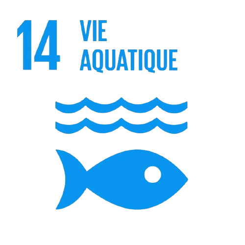

Audiovisuel


- Réalisation et montage
- Interview et format documentaire
- Écriture et rythme visuel
Base parallèle du portfolio en cours de refonte. Cette version sert à reconstruire une home plus propre, plus claire et plus premium sans toucher à la page temporaire actuellement en ligne.
Base de travail de la future home, avec une hiérarchie plus claire pour les projets.
Identité visuelle festival


Mini-documentaire & interview

Émission audiovisuelle en anglais

Animation 3D & ambiance visuelle

Campagne visuelle & affiche

Univers éditorial associatif
Aucun projet ne correspond à ce filtre pour le moment.
Une base fonctionnelle pour retravailler ensuite la hiérarchie, le fond et le niveau de finition visuelle.
Vidéo, graphisme, photo et production: cette version de travail regroupe déjà les grands blocs du portfolio pour pouvoir les retravailler proprement ensuite.
Télécharger CV



Je m'appelle Elouen Le Pendeven. Cette page sert de base parallèle pour reconstruire le vrai portfolio pendant que la version publique reste temporairement en mode “site en travaux”.
L'objectif ici est simple: repartir d'une structure saine, garder les bons projets, clarifier le positionnement et ensuite pousser la direction artistique sans casser le site visible.
On peut maintenant retravailler cette home, les sections, les projets et le contenu sans toucher à la page d’attente en façade.
Même pendant la refonte, le contact reste ouvert pour échanger autour d’un projet, d’un stage, d’une alternance ou d’une collaboration.